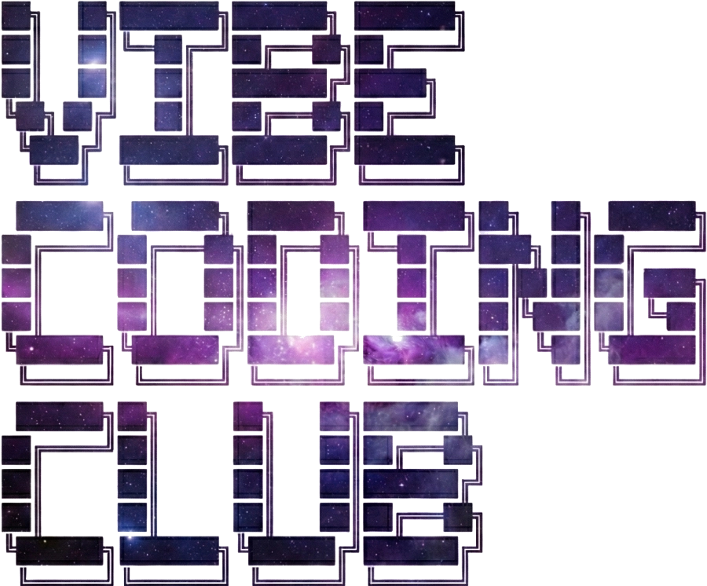

挑戦者特典
Claude Code Pro プラン、1ヶ月分の利用料を補助。
最新のAIコーディング環境をすべての参加者に。Vibe Coding Clubでは、開発の核となる「Claude Code Pro」プランの1ヶ月分サブスクリプション費用をクラブが全額負担します。環境構築に悩む時間は、もう必要ありません。
verified
エンジニアカフェ公式バックアップ
LOADING...

最新のAIコーディング環境をすべての参加者に。Vibe Coding Clubでは、開発の核となる「Claude Code Pro」プランの1ヶ月分サブスクリプション費用をクラブが全額負担します。環境構築に悩む時間は、もう必要ありません。
歴代挑戦者がバイブコーディングで作成したプロダクト
ペットのAI動画・画像生成。テーマを入力して癒し系画像やショート動画を自動生成。
BTC投資シナリオ比較ツール。「夢の理論値」と「手数料・ロスカットによる現実」を3シナリオで比較。
後出し優先ロジックで時間を自動管理。24hタイムライン・アナリティクスで作業時間を記録・分析。
源氏物語をRAGで検索しGeminiが専門家回答。参照場面をカード表示しストリーミング回答。
Google Colab T4 GPU上でQwen2.5-7BをLLMサーバーとして公開。FastAPI+pyngrokで外部から接続可能。
回線快適度をヒートマップで自動可視化。15分間隔でDL/UL/Ping/Jitterを計測しスコア化。
自然言語でtoioをBLE制御するMCPサーバー。Claude Desktopから8種のツールで操作可能。
AIエージェントでScratchをリアルタイム編集。project.jsonをプレーンJSONとして公開し双方向同期。
Scratchの関数・イベント・変数をグラフ可視化。sb/sb2/sb3の全形式に対応しリアルタイム再解析。
AIパートナーの人格を異なるモデルへ引き継ぐ。Persona Seedで温度感・人格の輪郭を継承。
議題に3つのAIペルソナが並列討論。ジョブズ型・実装型・カオス型がブレストをサポート。
ハンドジェスチャーでPCをハンズフリー操作。Claude Codeのターミナル操作も身振りで。
テキストから作業用BGMをAI生成。シームレスなループ再生でBGMが途切れない。
このサイト自体もプロダクト。粒子アニメーション・カルーセル・JA/EN切替を実装。
エンジニアカフェ 地下1階 会議室
毎週土曜日 16:00 〜 18:00（開場15:00・撤収19:00）
| 16:00 - 16:15 | 今日の目標発表 |
| 16:15 - 17:45 | バイブコーディング ※ |
| 17:45 - 18:00 | 進捗・最終発表 |
| 18:00 - | オフレコ交流会（自由参加） |
※ 挑戦者の希望に応じて、Claude Code・Codex・Antigravity・Gemini CLI の初心者講習をします🔰